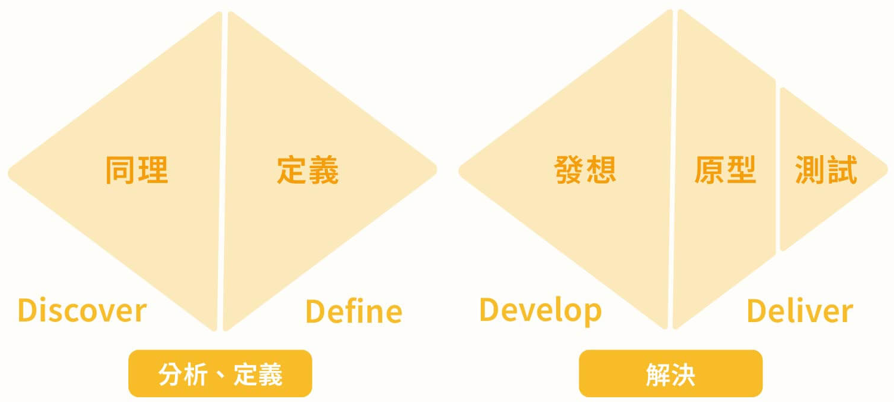

宣洩情緒的批評例如：
你為什麼又沒交作業！
都幾次了，
你這個人就是這樣糟糕，
講幾次你都不聽。
Thinking in Design Thinking
一個 prototype 變好的方式，
不是躲開批評，
而是學會使用批評。
Double Diamond

這裡是碰撞最激烈的區域
Friction and Growth
在發展（Develop）與交付（Deliver）中，
我們需要不斷地透過同理使用者、實作試錯，
讓想法接受現實的「摩擦」。
這是一個充滿批評與失敗的區域，
但也是產品真正透過壓力「演進」的起點。
Trial and Error
設計思考的重點是「思考」。
學生透過一次次試誤、失敗、修正，
甚至是批評，讓 prototype 更接近真實需求。
問題是：當我們反覆面對不完美時，
該如何轉化這些「負面能量」？
Evolutionary Loop
不只是承受攻擊，
而是從
壓力、錯誤與回饋
中吸收養分，
讓設計在每次試用中進化。
Blind Spot
如果大家都只稱讚、不批評，
產品會停留在「虛假的完美」，
我們將永遠看不見
那些致命的盲點。
Designer Mindset
因此，設計師必須建立
健康的強韌心態。
不只不怕被批評，
還要熱愛從回饋中挖掘寶藏。
Information
因為我們知道
每個「好的、精準的批評」，
本質上都是珍貴的資訊。
Quality of Feedback
那我們怎麼知道，
怎樣是提供資訊的
「精準批評」，
哪些只是我們不用理會的
「責罵」？
What Counts
許多責罵就只是宣洩情緒。
反之，精準的批評是就事論事的精神，
理性客觀地給出建議、點出問題所在。
後者才是真正有用的資訊
宣洩情緒的批評例如：
你為什麼又沒交作業！
都幾次了，
你這個人就是這樣糟糕，
講幾次你都不聽。
就事論事的建議例如：
你目前 10 次作業中有 7 份缺交，
這會影響到你的成績。
你認為這背後的問題，
有可能是時間管理或是
修課心態上需要調整嗎？
Your Turn
你的人生經驗中，
收到的建議比較偏向
「客觀精準的就事論事」
還是「宣洩情緒的批評」？
你願意分享其中一次的感受嗎？
掃描右側 QR code 留言，
看看其他人的分享！